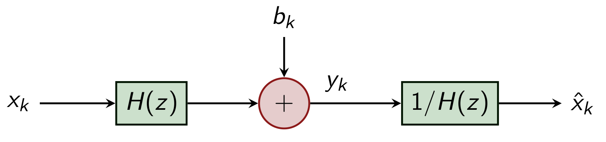
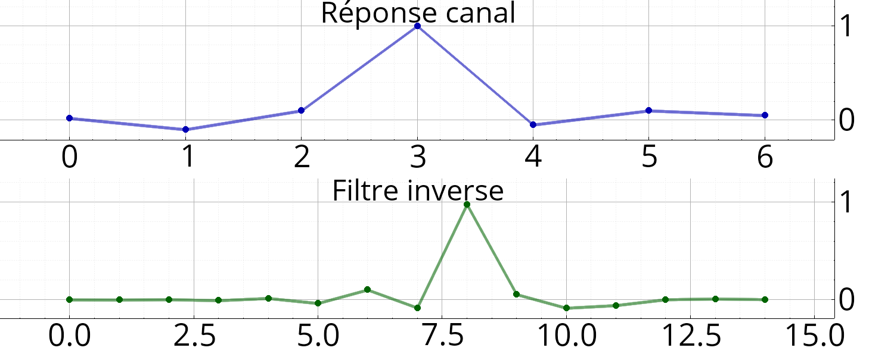
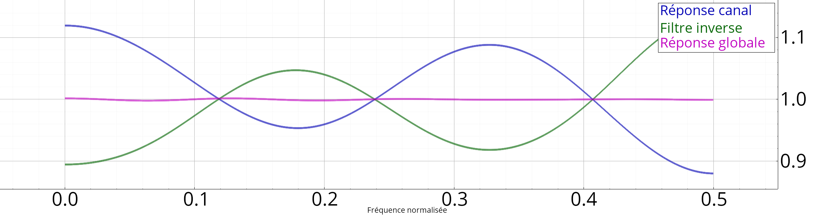
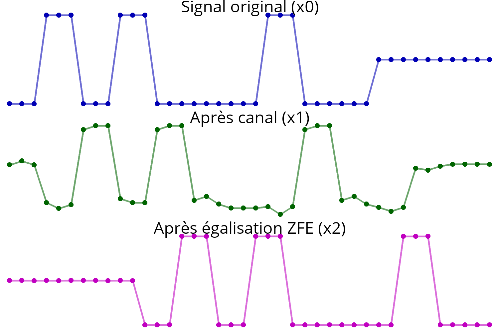

égaliseur_zfe
Calcul du filtre inverse par zéro-forçage.
Espace de nom : tsd::telecom
Prototype
Vecf égaliseur_zfe(const Vecf &h, entier n)
Paramètres
| h | Réponse impulsionnelle du canal, |
| n | Nombre de coefficients souhaités pour le filtre inverse. |
Retourne
Filtre RIF inverse (coefficients).
Description
Etant donné la réponse du canal \(h\), cette fonction calcule les coefficients d'un filtre RIF \(g\), en essayant d'approximer
\(d\) étant un délais global. Autrement dit, \(g\) est un filtre inverse (au délais près) de \(h\).

Egalisation ZFE
- Note
- Cette fonction requiert de pouvoir mesurer la réponse du canal (par exemple en envoyant un signal de type impulsionnel côté émetteur).
- Avertissement
- L'inversion n'est qu'approximative, le filtre inverse exact ayant une réponse impulsionnelle de support non borné.
- Avertissement
- Si la réponse du canal présente des zéros (ou des magnitudes faibles) dans le domaine fréquentielle, ce type d'égalisation n'est pas recommandée (amplification du bruit).
Exemple
// h = réponse du canal (supposée connue) soit h = Vecf::valeurs({0.02, -0.1, 0.1, 1, -0.05, 0.1, 0.05}),
// g = filtre d'égalisation g = égaliseur_zfe(h, 15);
// Essai sur un signal NRZ soit x0 = randi(2, 10).as< float >() * 2 - 1;
x0 = (sah(x0, 3) | Vecf::zeros(10)); // NRZ + flush soit x1 = convol<float,float>(h, x0),
x2 = convol<float,float>(g, x1);

Réponses fréquentielles (canal et du filtre d'égalisation) :

Exemple d'égalisation sur une flux NRZ :
